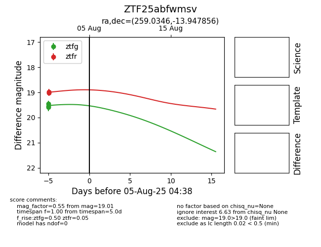

Target ZTF25abfwmsv at 2025-08-05 04:38, see:
FINK: fink-portal.org/ZTF25abfwmsv
Lasair: lasair-ztf.lsst.ac.uk/objects/ZTF25abfwmsv
ALeRCE: alerce.online/object/ZTF25abfwmsv
alt names
ZTF25abfwmsv (ztf,fink)
coordinates:
equatorial (ra, dec) = (259.0346,-13.94786)
galactic (l, b) = (9.0396,+13.82722)
photometry
last ztfg=19.45, ztfr=19.01
3 ztfg, 2 ztfr detections
